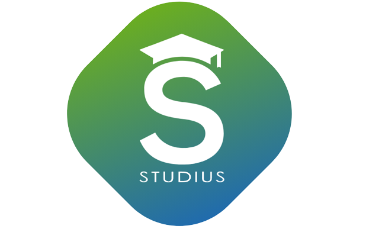

<ion-menu contentId="main-content">
  <ion-content id="bg" class="ion-padding" style="--background: #e2e2e23b">
    <div class="menu-header-bg"></div>
    <div class="header-content">
      
       <ion-label>
        <h2 style=" font-weight: 300;
        color: #fff;margin-left: 16px"> {{ user.firstName }} {{ user.lastName }}</h2>
       </ion-label>

    </div>

    <ion-item lines="none" style="margin-top: 16px; --background: transparent">
      <ion-icon name="person-outline" slot="start" style="--ion-color: linear-gradient(28deg, #206bae, #6bae20) !important"></ion-icon>
      Profil
    </ion-item>

    <ion-item lines="none" (click)="desconnexion()" style="margin-top: 16px; --background: transparent">
      <ion-icon name="log-out-outline" slot="start" style="color: linear-gradient(28deg, #206bae, #6bae20)!important"></ion-icon>
      <ion-label>Se deconnecter</ion-label>
    </ion-item>
    <ion-list-header style="    margin-top: 331px;
    height: 54px; width: 295px; margin-left: -13px; border-radius: 6px;">
      <div style="font-size: 23px">Studius</div>
      <div style="max-width: 24% !important">
        
      </div>
    </ion-list-header>
  </ion-content>
</ion-menu>
